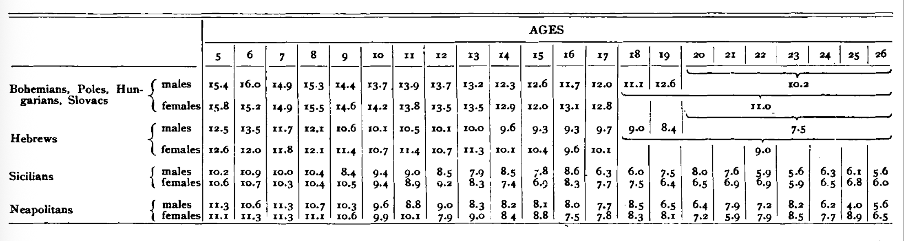
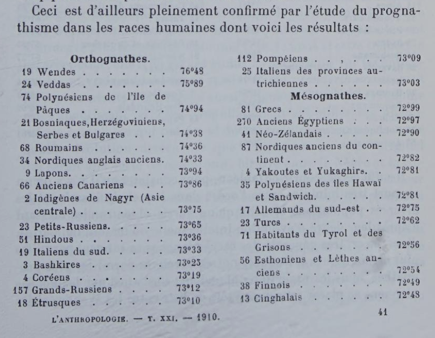
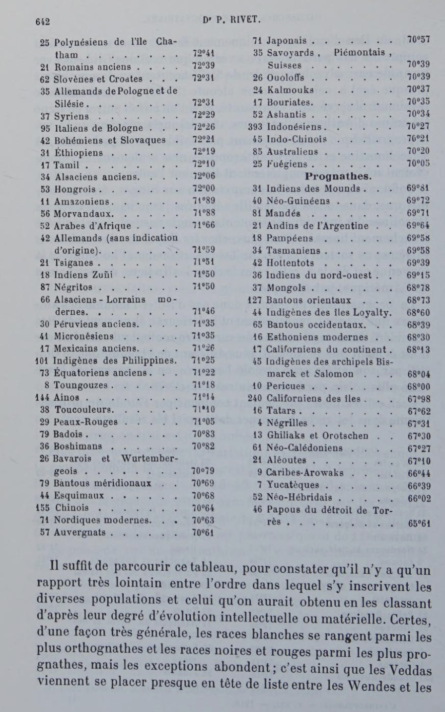
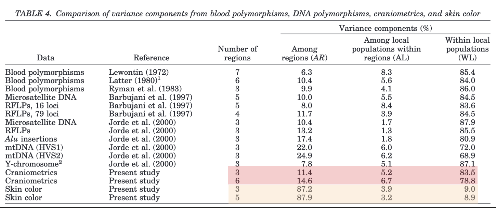
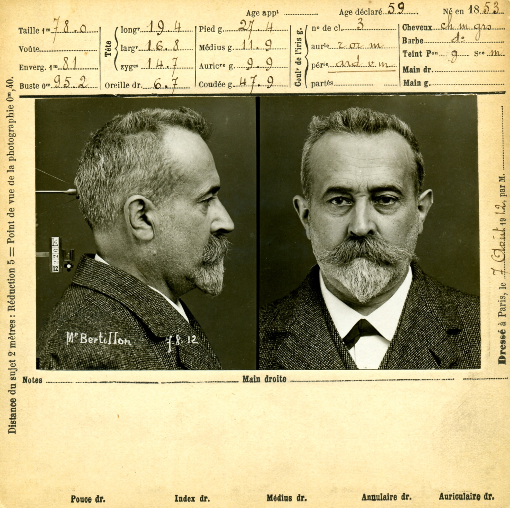

Boas, Rivet, and the End of the Craniometry of Race
Franz Boas and Paul Rivet, two long-distance friends and foundational colleagues in their discipline,1 each published major works around the same time that analyzed thousands of skulls using conventional anthropometric techniques. But these works, published on opposite sides of the Atlantic each upended long-held assumptions about racial types and the heritability of physical traits.
1 Christine Laurière, “Anthropology and Politics, the Beginnings: The Relations between Franz Boas and Paul Rivet (1919-42),” Histories of anthropology annual 6, no. 1 (2010): 225252, https://doi.org/10.1353/haa.2010.0004.
Boas’s 1912 article “Changes in Bodily Form of Descendants of Immigrants” analyzed the cranial measurements of around 18,000 children and young adults and found that the then-accepted measure of cranial form — the cephalic index — varied significantly between American immigrants and first-generation children of American immigrants, and also between families with different numbers of children:
American-born descendants of immigrants differ in type from their foreign-born parents. The changes which occur among various European types are not all in the same direction. They develop in early childhood and persist throughout life. … Foreign-born parents when compared with their own foreign- born and American-born children exhibit the same types of differences for the children as the whole series.2
2 Franz Boas, “Changes in the Bodily Form of Descendants of Immigrants,” American Anthropologist 14, no. 3 (1912): 530–62, https://doi.org/10.1525/aa.1912.14.3.02a00080.

Rivet’s 1909-10 study, released in a serial fashion in the journal L’Anthropologie (1909|1910), analyzed the cranial measurements of over 6,000 individuals from around the world, including a substantial number of non-human primates. In this case the variable in question was prognathism, defined as “the protrusion of the upper or lower jaw … [measured as] the facial angle (the slope of a line from forehead to jaw).”3
3 Alice L. Conklin, In the Museum of Man: Race, Anthropology, and Empire in France, 18501950 (Cornell University Press, 2013), 63, https://doi.org/10.7591/9780801469046.
II suffit de parcourir ce tableau, pour constater qu’il n’y a qu’un rapport trés lointain entre l’ordre dans lequel s’y inscrivent les diverses populations et celui qu’on aurait obtenuen les classant d’aprés leur degré d’évolution intellectuelle ou matérielle. Certes, dune fagon trés générale, les races blanches se rangent parmi les plus orthognathes et les races noires et rouges parmi les plus prognathes, mais les exceptions abondent.
One need only glance at this table to see that there is only a very distant relationship between the order in which the various populations are listed and the order that would have been obtained by classifying them according to their degree of intellectual or material evolution. Admittedly, in very general terms, white races are among the most orthognathic and black and red races among the most prognathic, but there are many exceptions.


Later in the same article, Rivet explicitly rejects the idea that prognathism is a marker of racial inferiority:
Par contre, j’espére avoir prouvé qu’il ne faut pas lui attribuer Vimportance qu’on a été tenté parfois de lui donner en tant que caractere sériaire et qu’on ne doit surtout pas le considérer comme un caractére d’infériorité.
On the other hand, I hope I have demonstrated that we should not attribute to it the importance that we have sometimes been tempted to give it as a serious character trait, and that we should certainly not consider it a sign of inferiority.
Boas and Rivet were two of the early twentieth century scientists who were “wrestling with many of the … methodological and conceptual problems in race science.”4 As we’ve seen in class, some scientists would react to the lack of supportive evidence for profound racial difference, much less racial inferiority, with disbelief, and others with steady confidence that the necessary data were forthcoming.
4 Conklin, In the Museum of Man, 64.
5 Manifesto by 1,284 Noted u.s. Scientists Denounces Racialism, Fascist Position on Science, n.d., https://www.jta.org/archive/manifesto-by-1284-noted-u-s-scientists-denounces-racialism-fascist-position-on-science.
Boas and Rivet were two scholars who eventually concluded that the evidence was lacking for racial difference and turned their eye towards racism as both an object of study and political target. Ultimately, Boas would organize 1,284 scientists from 167 universities to sign a joint manifesto in December 1938 to, in his words, “declare that we scientists have the moral obligation to educate the American people against all false and unscientific doctrines, such as the racial nonsense of the Nazis.”5
Craniometry’s collapse as a racial measure is documented in Paul Turbull’s recent chapter “Surveying Craniometry.”6 Boas’ engagement with race is the subject of a chapter of Lee Baker’s From Savage to Negro.7 Rivet’s studies of craniometry are described in Christine Laurière’s biography of Rivet.8
6 Paul Turnbull, Surveying Craniometry (Routledge, 2023).
7 Lee D Baker, From Savage to Negro: Anthropology and the Construction of Race, 1896-1954 (University of California Press, 1998).
8 Christine Laurière, Se faire un nom, Archives (Publications scientifiques du Muséum, 2008), 167–209, https://books.openedition.org/mnhn/2401.
9 Bronwen Douglas, Climate to Crania:: Science and the Racialization of Human Difference, ed. Bronwen Douglas and Chris Ballard, Oceania and the Science of Race 1750-1940 (ANU Press, 2008), 33–96, http://www.jstor.org/stable/j.ctt24h8th.9.
10 Geertje Mak, “A Colonial-Scientific Interface: The Construction, Viewing, and Circulation of Faces via a 1906 German Racial Atlas,” American Anthropologist 122, no. 2 (2020): 327–41, https://doi.org/10.1111/aman.13386.
11 Alejandra Bronfman, Measures of equality: social science, citizenship, and race in Cuba, 1902-1940, Envisioning Cuba (University of North Carolina Press, 2004).
12 Skulls in Print: Scientific Racism in the Transatlantic World | University of Cambridge, 2014, https://www.cam.ac.uk/research/news/skulls-in-print-scientific-racism-in-the-transatlantic-world.
Multiple sources take a larger look at craniometry, including on its origins as a scientific practice,9 photographic anthropometric atlases and colonialism,10 and anthropometry and race in Cuba,11 and the international circulation of Morton’s Crania Americana.12

Contemporary scientific measurements shows that inter-continental (often used as a proxy for interracial) variation in cranial characteristics is a small fraction of overall human variation,13 which puts it in line with most other biological characteristics, skin color being the notable exception. As with other markers, cranial measurements can be useful for tracing population-level relationships and migration, something both Boas and Rivet suspected based on their data.14
13 John H. Relethford, “Apportionment of Global Human Genetic Diversity Based on Craniometrics and Skin Color,” American Journal of Physical Anthropology 118, no. 4 (2002): 393–98, https://doi.org/10.1002/ajpa.10079.
14 John H. Relethford, “Boas and Beyond: Migration and Craniometric Variation,” American Journal of Human Biology 16, no. 4 (2004): 379–86, https://doi.org/10.1002/ajhb.20045.
15 Leonard Lieberman, “How “Caucasoids” Got Such Big Crania and Why They Shrank: From Morton to Rushton,” Current Anthropology 42, no. 1 (2001): 69–95, https://doi.org/10.1086/318434.
For more on early twenty-first century racists’ attempts to revive craniometric “evidence” of racial inequality, see Leonard Lieberman’s takedown of J. Philippe Rushton.15
